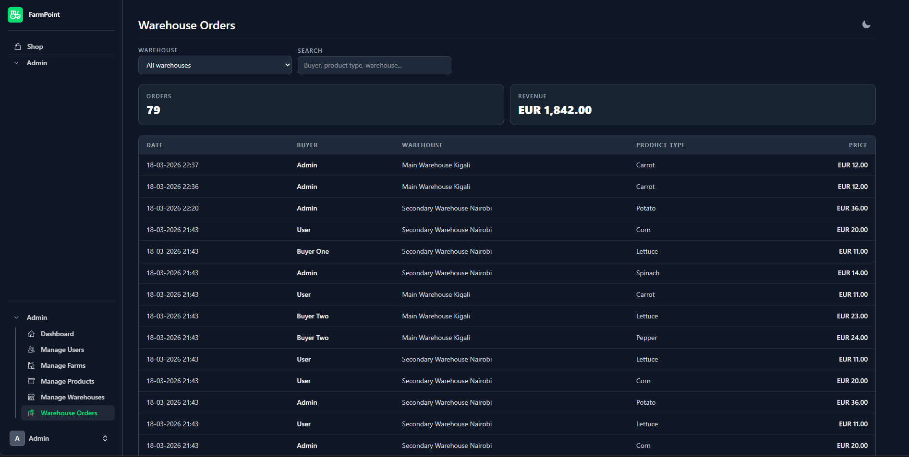

FarmPoint
FarmPoint, the point where farmers share food and communities.

Overview
Built in just a few days around the theme of helping African farmers, our idea was to give farmers an easy and reliable way to share food before it went bad. By using technologies such as Docker, Google Cloud, and even Kubernetes, farmers had a simple way to set everything up. Thanks to the self-healing properties of Kubernetes, the system required little maintenance, making it a practical and sustainable solution. My role in the project mainly focused on the setup and hosting of the platform on Google Cloud with the help of Docker.
Background
This project was part of the “More Professional Week,” a week in which students from different courses come together to work on a project based on a specific theme. Our theme was farmers in Africa. After only a few hours of brainstorming, we already had a prototype of our idea and quickly got to work on it. We had a lot of fun working on this project, and we learned a great deal about different technologies, as well as how to collaborate effectively as a team. As the only Dutch-speaking student in the group, it was also a good opportunity for me to strengthen my English skills. Not only was I the only Dutch student, but I was also the only Cloud & Cybersecurity student among the ACS students. I had the pleasure of building the infrastructure for the project, which mainly involved Docker and cloud technologies, and that made it even more enjoyable for me. I really enjoy experimenting with cloud platforms and container technologies.
Technologies
- Docker
- Google Cloud
- Kubernetes
- Laravel
- MySQL
- CSS Tailwind